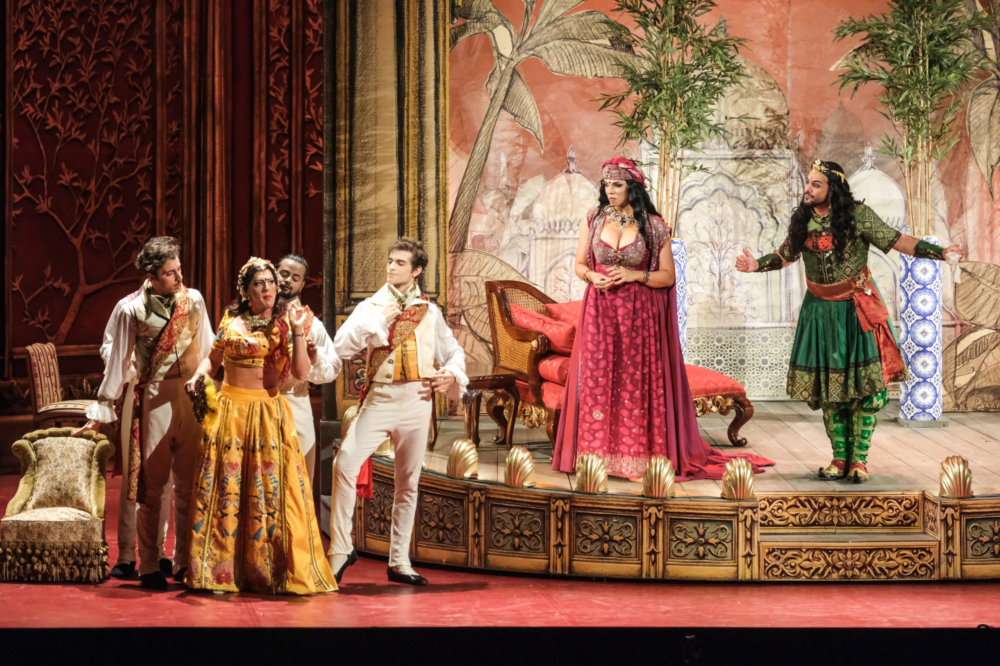

Elsa Álvarez

Viena. 21/4/26. Theater an der Wien. Vinci, Alessandro nell’Indie. Martyna Pastuszka, concertino i directora. Maayan Licht, Alessandro. Dennis Orellana, Poro. Bruno De Sá, Cleofide. Jake Arditi, Erissena. Stefan Sbonnik, Gandarte. Nicholas Tamagna, Timagene. Max Emanuel Cencic, escenografia. {oh!} Orkiestra
Durant la meva estada a Viena vaig assistir a concerts de naturalesa diversa. Més enllà de Thielemann i del repertori germànic, em va venir molt de gust poder visitar el Theater an der Wien, el famós teatre d’Emanuel Schikaneder on es va estrenar Die Zauberflöte, i el mateix espai on Beethoven també va estrenar algunes de les seves simfonies. La il·lusió de la meva visita era doble: volia veure el teatre, i tenia moltes ganes de veure una òpera barroca desconeguda d’un d’aquells compositors mig oblidats: Alessandro nell’Indie, de Leonardo Vinci —que cal no confondre amb el pintor de dos segles abans—, basada en el mateix llibret de Metastasio a partir del qual Händel escriuria el seu Poro.
En primer lloc he de dir que és el millor muntatge escènic d’una òpera barroca que he vist mai. Quan vaig a veure una òpera em fixo molt més en la música que en l’escenografia, que considero molt secundària —de fet, en la majoria de casos m’estimaria més una versió concert. En aquest cas, però, era impossible no fixar-s’hi, perquè era exuberant en colors, bigarrada, divertida, irreverent, i hi havia molt de moviment i de ballet. Però pel meu gust, donar tant de pes al muntatge va ser una trampa per amagar la realitat, i és que Alessandro nell’Indie no és cap meravella musical. És agradable d’escoltar, però la música no és imaginativa ni profunda. És efectista fins a cert punt, però es fa una mica repetitiva, i tenint en compte que l’òpera dura més de quatre hores, es fa avorrida abans d’arribar a la meitat. No conec res més de Vinci, però goso afirmar que Vinci no és Händel. Händel no necessita un muntatge amb focs artificials perquè les seves òperes penetrin al fons de l’ànima.
D’altra banda, el muntatge i l’actuació dels intèrprets suggeria de manera evident que es tractava d’una òpera còmica, quan en realitat les òperes barroques no ho són. No són tràgiques perquè acaben bé; són serioses, encara que puguin tenir algun element còmic. Aquest enfocament va fer perdre força a alguna de les àries de l’òpera, especialment la gran ària dramàtica de Cleofide al segon acte. L’esperit desenfadat i irreverent del muntatge escènic de Cencic va entrar en certa col·lisió amb l’esperit de l’òpera, o més aviat amb la manca d’esperit. En realitat l’argument és bastant complicat, i els personatges es movien més aviat com marionetes sense horitzó.
Un altre punt a favor d’aquesta producció va ser el fet que l’elenc vocal era exclusivament masculí, tal com es feia en època de Vinci. Cinc contratenors i un tenor van encarnar els quatre rols masculins i els dos femenins que componen la història. La factura interpretativa va ser absolutament excel·lent. Alguns dels cantants van fer piruetes vocals extemporànies amb òperes de Verdi. Primer Bruno De Sá va cantar un tros de l’ària “È strano”, per fer una exhibició de lluïment. Com si es tractés d’un concurs de paons reials, Dennis Orellana, en el paper de marit cornut, va replicar tot cantant “La donna è mobile”, en al·lusió a la suposada infidelitat de la seva esposa. Va ser una excursió musical divertida però innecessària. Probablement respon a l’esperit del barroc, on tots els excessos no tan sols eren permesos, sinó celebrats. D’entre tots els cantants, jo destacaria especialment el soprano Bruno de Sá, que precisament fa tres mesos va venir a Barcelona en un concert extraordinari al costat de l’Ensemble 1700 i Dorothée Oberlinger. La veu de De Sá és perfectament femenina, amb els harmònics i el vibrato propis d’una dona.
El vestuari va ser fastuós, d’acord amb el muntatge. En un escenari situat a l’Índia, tot van ser colors virolats i elements daurats. De Sá, com a Cleofide, el van empolainar amb un vestit femení preciós, com també va passar amb Jake Arditi, l’altre contratenor en un paper femení. L’orquestra, dirigida des del primer violí per Martyna Pastuszka, va sonar amb energia i brillantor i va acompanyar magníficament els cantants.
En resum, vam veure la resurrecció d’una òpera enterrada —estrena a Àustria— d’un autor mig oblidat, en una interpretació fabulosa i un muntatge extraordinari. La pregunta és: cal desenterrar tot allò que és antic? De debò creiem que tots els compositors del barroc són de la categoria de Händel?